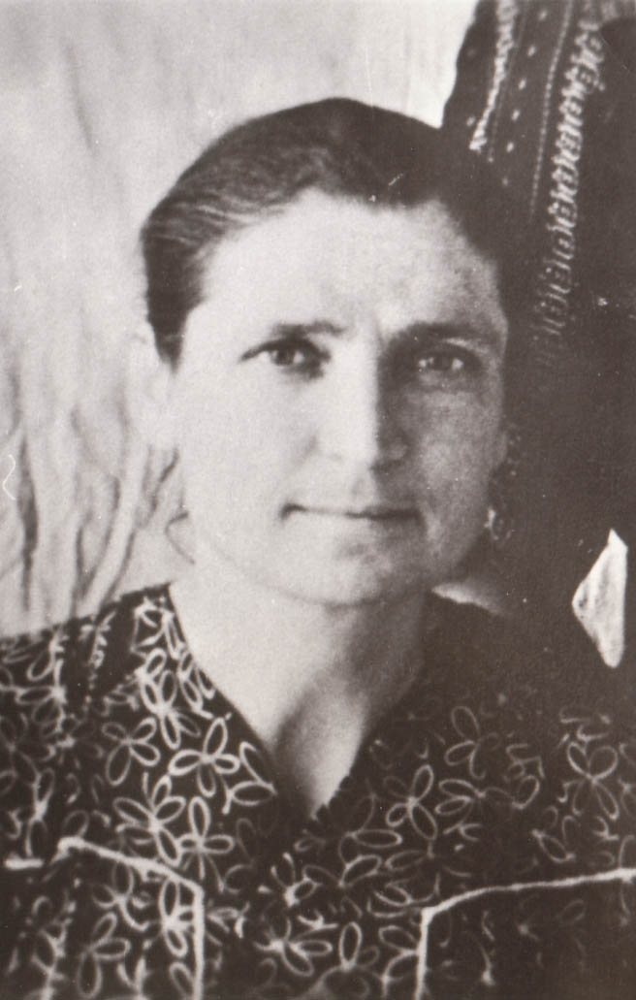
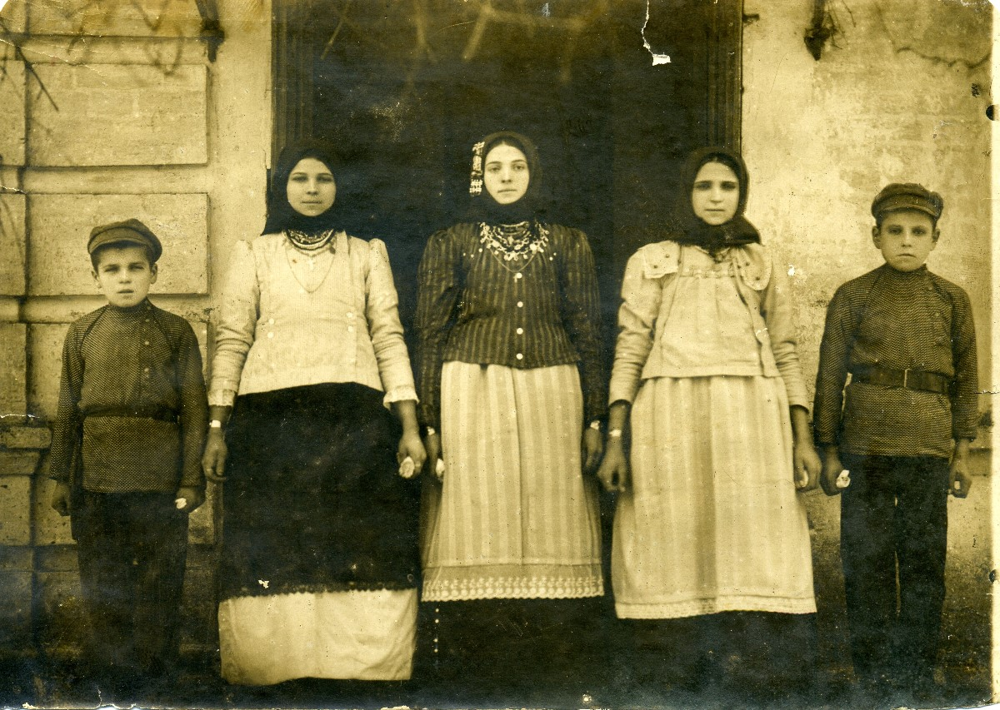
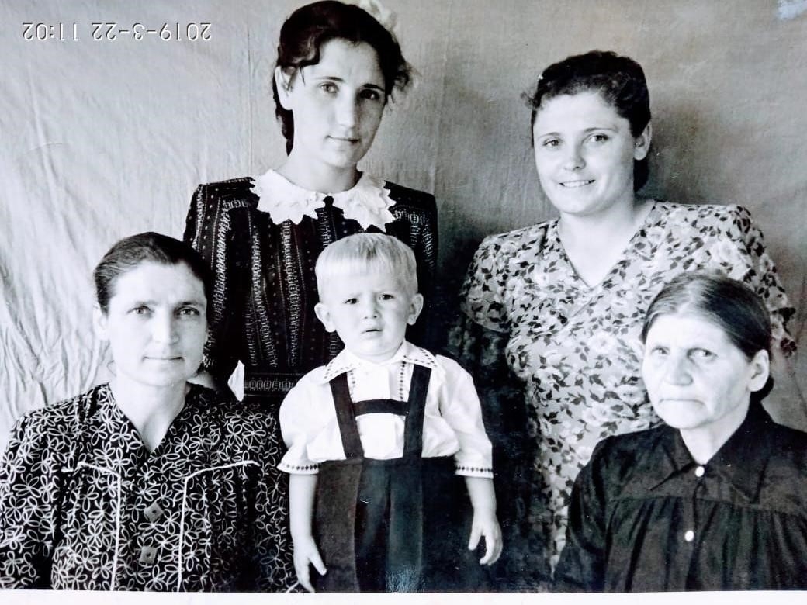
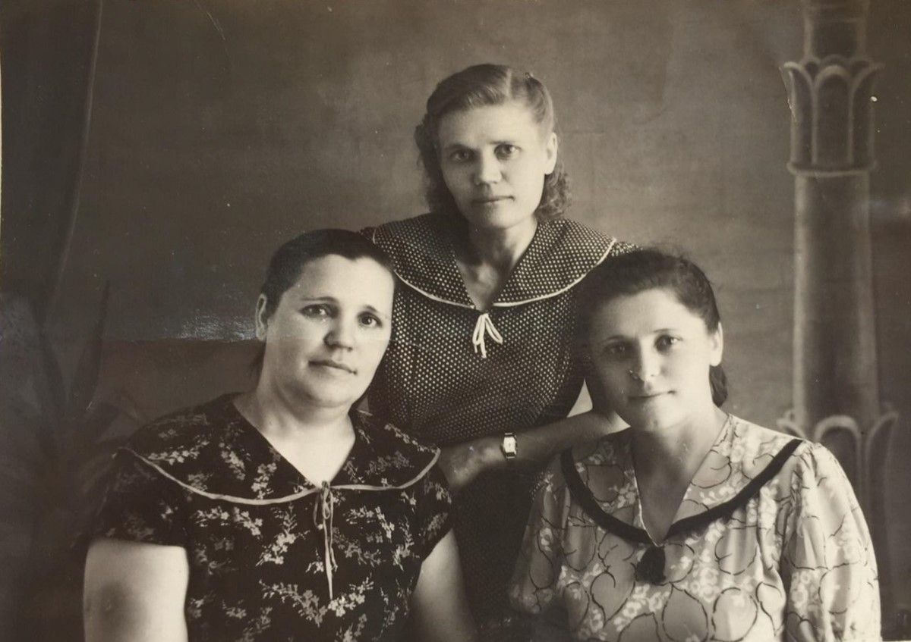

Акулина Степановна.Родилась: 10.11.1911, с. Зеленое (с. Зеленовка)
Умерла: 20.11.1968
Род: Сербиновы
Продолжительность жизни: 57
Место жительства: г. Копейск
тетя Калина
Отец: Сербинов Степан Федорович
Мать: Сербинова (Ковачева) Анастасия Михайловна
Сестра: Сербинова Мария Степановна
Брат: Сербинов Георгий Степанович
Сестра: Станчевская (Сербинова) Доминикия Степановна
Брат: Сербинов Василий Степанович
Брат: Сербинов Иван Степанович
Брат: Сербинов Александр Степанович
Сестра: Мокина (Сербинова) Елена Степановна
Брат: Сербинов Федор Степанович
Брат: Сербинов Георгий Степанович
Сестра: (Сербинова) Мария Степановна
Сестра: Салтовская (Сербинова) Анна Степановна
Муж: Турлаков Илья Васильевич
Дочь: Ситникова (Турлакова) Валентина Ильинична
 дети Степана Федоровича Сербинова: около 1925, с. Зеленое (с. Зеленовка). Вверху - Валентина Ильинична и Мария Степановна Сербинова, внизу - тетя Калина и бабушка Настя, между ними Машин сын Виктор. В гостях у Георгия Степановича: г. Копейск. Поселок шахты № 205Из фотоальбома Марии Степановны Сербиновой. |